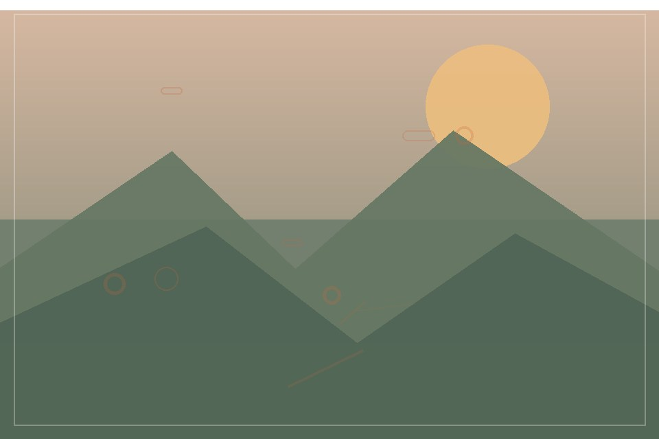

ABOUT THE STUDIO
Natural light, real atmosphere, thoughtful frames.
Lumen & Grain is a fictional photography studio focused on people, places, and details with a story to tell.

Our approach
Keep the moment feeling like itself.
We start with a conversation about what you want to remember or communicate. Then we plan a setting, pace, and direction that leaves room for natural expression.
The studio favors gentle guidance, available light when it suits the scene, and careful editing that keeps color and texture believable.
The kit
Simple tools, used with intention.
Full-frame camera bodies
Versatile equipment for changing light and settings.
Prime and zoom lenses
Options for intimate details and wider context.
Portable lighting
Subtle light shaping when the location needs a hand.
Planning a session?